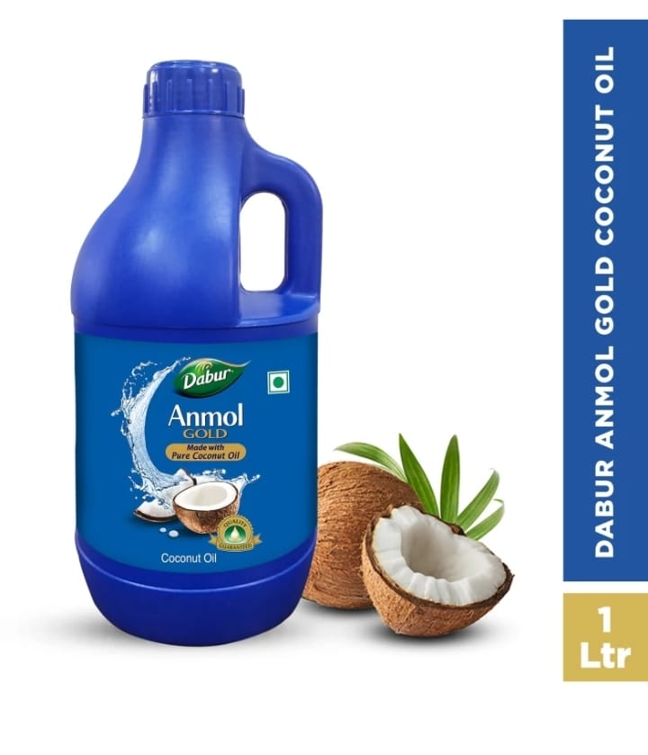

Coconut hair oils
For more information about perticular product clicke on the product name
Bajaj Coconut oil - 1 litre
BAJAJ 100% Pure Coconut Oil 1 litre Hair Oil (1 L)
MRP -
Discount Price -
Sale Price -
Description:
1. 100% Pure Virgin Coonut Oil.2. Virgin & Cold Pressed oil.
3. Repairs damaged Hair# & Moisturizes Skin.
4. It is Cruelty free, paraben free, Silicone free.
5. 100% Vegetarian Product.
6. It is suitable for all Skin and Hair types.
Bajaj Coconut oil - 600ml
BAJAJ 100% Pure Coconut Oil 600 ml Hair Oil (600 ml)
MRP -
Discount Price -
Sale Price -
Description:
1. 100% Pure Virgin Coonut Oil.2. Virgin & Cold Pressed oil.
3. Repairs damaged Hair# & Moisturizes Skin.
4. It is Cruelty free, paraben free, Silicone free.
5. 100% Vegetarian Product.
6. It is suitable for all Skin and Hair types.
Dabur Anmol Gold 100% Pure Coconut Oil | Nariyal tel | Natural | Multipurpose Hair Oil (1 L)
Anmol Gold 100% Pure Coconut Oil 1 litre Hair Oil (1 L)
MRP -
Discount Price -
Sale Price -
Description:
Combining 135+ years of trust of Dabur with the purity and nourishment of finest hand-picked and sun-dried coconuts available in India, we created Anmol Coconut Oil. Dabur Anmol Coconut Oil undergoes 34 quality tests. It has a long-lasting shelf life of 18 months. The fresh coconut fragrance is kept intact using tamper proof seal and multi-stage filtration process. The regular use of edible Coconut Oil helps provide the required antioxidants and boosts immunity. Coconut Oil has traditionally been used as massage oil and helps improve skin metabolism. It can be used as a cooking oil providing nourishment and nutrition to the body, can be used with moisturizers to protect the skin from everyday damage and can also be used as a makeup remover. Regular usage of coconut oil for haircare provides abundant nourishment.
Dabur Anmol Gold 100% Pure Coconut Oil | Nariyal tel | Natural | Multipurpose Hair Oil (600 ml)
Anmol Gold 100% Pure Coconut Oil 600 ml Hair Oil (600 ml)
MRP -
Discount Price -
Sale Price -